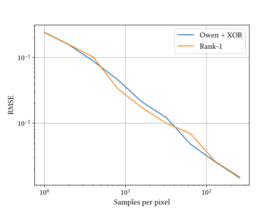
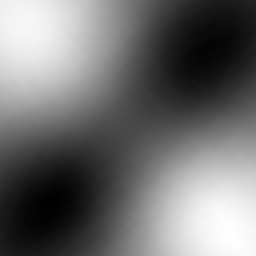

**Lessons Learned and Improvements when Building Screen-Space Samplers with Blue-Noise Error Distribution**
***Supplemental material***
Convergence rates
=======================================================================================
Here, we compare the convergence rates of the Sobol sequence with Owen
scambling compared to the Rank-1 Lattice. We used those sequence the same way
we use them in the screen-space sampler (with scrambling and padding). The
Sobol sequence uses XOR scrambling (that preserves convergence) and the Rank-1
sequence uses Cranley-Patterson Rotations
Convergence for
:

!!! Tip
**In summary**, we found that while the Sobol sequence with Owen scrambling
ensures superior convergence properties (thanks to multi-stratification),
**in practice Rank-1 Lattice perform as par on rendering integrands** after
dimension padding and per pixel scrambling.
Implementation
=======================================================================================
Our new screen-space sampler is still easy to implement in a modern rendering
engine. It requires a few lines of code to work:
~~~~~~~~~~~~~~~~~~~~~~~~~~~~~~~~~~~ C
// Return the k-th sample for the d-th dimension of the sequence
// at pixel p of the tile. Assumes that pixel coordinates, sampling
// count and dimensions are wrapped to the tile dimensions.
//
float sample(int2 p, int k, int d) {
float shift = m_tile(p.x, p.y)[d];
return mod(m_direction[d]*k + shift, 1.0)
}
~~~~~~~~~~~~~~~~~~~~~~~~~~~~~~~~~~~
Blur Criterion on Test Integrands
=======================================================================================
To assess the quality of this new screen-space sampler, we developped an
quantifiable criterion in order to make a rational decision. This quantifiable
criterion is the average variance of tiles of the test integrands (randomly
oriented heavisides). It is defined as:
$$
\mbox{RMSE} = \mbox{Var}[
k_\sigma \circledast e^{p}_t
]
$$
where $e^{p}_t = {1\over N} \sum_k f_t(\mathbf{s}_p^k) - \int f_t(\mathbf{x})
\mbox{d}\mathbf{x}$ is the tile of the Monte-Carlo estimation of the test
integrand $f_t(\mathbf{x})$ for each pixel $p$ of the tile.
Convergence at
For small sample counts, the two sequences are reducing the RMSE with roughly
the same slope. However, as we increase the number of samples, the Rank-1 based
screen-space sampler reduce the variance faster than the Sobol with Owen
scrambling one.
Blur Criterion on Rendering Scenes
=======================================================================================
We validate that the objectivable criterion on the test integrand is
correlated with the denoising quality for actual renderings. Here we
report the RMSE of our screen-space samplers after a screen space blur
of varying size:
$$
\mbox{RMSE} =
\left\lVert
\left( k_\sigma \circledast I_{{ref}} \right)
- \left( k_\sigma \circledast I \right)
\right\rVert_2,
$$
where $I$ is the rendered image with our screen-space sampler, $I_{ref}$
is the reference image, and $k_\sigma$ is a Gaussian blur kernel of
standard deviation $\sigma$.
If the rendering noise has localy a constant amplitude, using a sampler
that distribute the error as a blue-noise will ensure a reduced RMSE
for various kernel sizes.
Convergence for
at
!!! Tip
**In summary**, we observe that the results of computing the RMSE
on rendering integrands follows the same behaviour as for the test
integrands.
!!! Warning
You can find a side-by-side comparison to visually validate that
this criterion produces better looking images as well
here.
Eigenvectors of an Optimization
=======================================================================================
The optimization loss is defined from the L2-norm of the matrix of error. Since
this matrix of error is build on the vectors of estimates, it lies in a
N-dimensional vector space. Changing the main sequence will change the values
in the vectors of estimates, and results in a different vector space.
We extracted the eigenvectors $\mathbf{v}^k$ and eigenvalues $\lambda^k$ of
such vector space for different main sequences (independent, Sobol with Owen
scrambling and Rank-1). Each eigenvector defines an eigenintegrand:
$$
g_k(\mathbf{x}) = \sum_t v^k_t f_t(\mathbf{x}),
$$
and the associated eigenvalue, tells us how much this integrand is important
for the optimization. This link shed some light regarding the noise
distribution of some sampler.
For example, in the following we display the eigenvectors resulting from the
optimization of 1024 test integrands at 16 spp. We display the first 3
eigenvectors with the cumulative sum of absolute eigenvalues $\mbox{cum}_e$.
For an indepdendant sampler (where each sample is obtained from a random number
generator) we obtain the following eigenvectors:
$c_1 = 0.299$
$c_2 = 0.595$

$c_3 = 0.650$
$c_4 = 0.702$
$c_5 = 0.740$
For our previous screen-space sampler with a Sobol sequence with Owen
scrambling as main sequence we obtain the following eigenvectors:
$c_1 = 0.217$
$c_2 = 0.402$
$c_3 = 0.450$
$c_4 = 0.508$
$c_5 = 0.523$
Using our improved screen-space sampler with Rank-1 main sequence we
obtain the following eigenvectors:
$c_1 = 0.219$
$c_2 = 0.379$
$c_3 = 0.463$
$c_4 = 0.544$
$c_5 = 0.606$
!!! Tip
**In summary**, we observe that the main sequence we used previously [Heitz et al. 2019]
produces eigenintegrands with higher-frequencies than the one of the independent sampler
and the Rank-1 main sequence. We conjecture that this is linked with the quality of the
error distribution performances of the screen-space sampler.